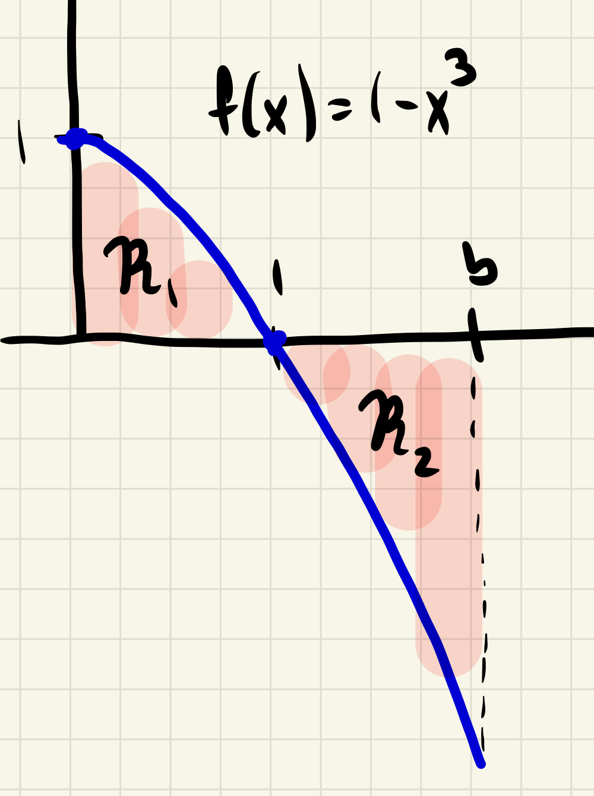

Section 1.4 Definite integral
Definition 1.4.1. Definite integral.
Let \(f\) be a function defined on the interval \([a,b]\text{.}\) The definite integral of \(f\) over \([a,b]\text{,}\) if it exists, is a real number \(J\) satisfying the following property: for any sequence of pointed partitions \(P_n\) of \([a,b]\) whose norms \(\norm{P_n}\) satisfy \(\lim_{n\rightarrow \infty}\norm{P_n}=0\text{,}\) the associated Riemann sums \(S_n\) satisfy
\begin{equation}
\lim_{n\to\infty}S_n=J\text{.}\tag{1.4.1}
\end{equation}
In plain English, the definite integral of \(f\) over \([a,b]\) is equal to \(J\) if any sequence of Riemann sums corresponding to a sequence of finer and finer pointed partitions of \([a,b]\) approaches \(J\) in the limit.
When this is the case we say \(f\) is integrable over \([a,b]\text{,}\) and denote the definite integral \(J\) as
\begin{equation*}
\int_a^bf(x)\, dx\text{.}
\end{equation*}
Procedure 1.4.2. Limit computation of integral.
Assume \(f\) is integrable on the interval \([a,b]\text{.}\) Since by definition \(\displaystyle\int_a^bf(x)\, dx\) can be computed using any sequence of Riemann sums, for simplicity we will often compute it either as a limit of left or right Riemann sums corresponding to partitions of \([a,b]\) into \(n\) equal subintervals. To do so, follow the appropriate steps below for your choice of Riemann sum (left or right).
-
Partition description.
For an equally subdivided partition \(a=a_0\lt a_1\lt \dots \lt a_n=b\text{,}\) all subintervals have common length
\begin{equation}
\Delta x=\frac{b-a}{n}\tag{1.4.2}
\end{equation}
and we have
\begin{equation}
a_k=a+k\Delta x\tag{1.4.3}
\end{equation}
for all \(0\leq k\leq n\text{.}\)
-
Construct Riemann sums.
Let
\(L_n\) and
\(R_n\) be the left and right Riemann sums, respectively, corresponding to the partition of
\([a,b]\) into
\(n\) equal subintervals. It follows from
(1.4.3) it follows that
\begin{align}
L_n \amp = \sum_{k=1}^nf(a_{k-1})\Delta x= \sum_{k=1}^nf(a+(k-1)\Delta x)\, \Delta x\tag{1.4.4}\\
R_n \amp = \sum_{k=1}^nf(a_{k})\Delta x= \sum_{k=1}^nf(a+k\Delta x)\, \Delta x\tag{1.4.5}
\end{align}
-
Compute limit.
We may now compute the integral as either of the limits below:
\begin{align}
\int_a^bf(x)\, dx \amp = \lim_{n\to\infty}L_n\tag{1.4.6}\\
\int_a^b f(x)\, dx \amp = \lim_{n\to\infty}R_n\tag{1.4.7}
\end{align}
When computing these limits, it will be convenient to derive a closed form for the \(n\)-th Riemann sum (\(L_n\) or \(R_n\text{,}\) depending on your choice.)
Example 1.4.3. Integral of linear function.
Let \(f(x)=x\text{.}\) Compute \(\int_1^3f(x)\, dx\) first as a limit of right Riemann sums, and then as a limit of left Riemann sums.
Solution.
Following the steps of xr
Procedure 1.4.2 we first assemble ingredients regarding the
\(n\)-th partition of
\([1,3]\text{.}\) We have
\begin{equation*}
\Delta x=(3-1)/n=2/n, a_k=1+k\Delta k=1+2k/n\text{.}
\end{equation*}
Using
(1.4.5), for any
\(n\geq 1\) we have
\begin{align*}
R_n \amp = \sum_{k=1}^nf(1+k\Delta x)\,\Delta x \\
\amp = \sum_{k=1}^n(1+2k/n)\cdot (2/n) \\
\amp = \sum_{k=1}^{n}\frac{2}{n}+\sum_{k=1}^{n}\frac{4k}{n^2}\\
\amp = 2+\frac{4}{n^2}\sum_{k=1}^{n}k\\
\amp = 2+\frac{4}{n^2}\cdot (n(n+1)/2)\\
\amp = 2+2\frac{n^2+n}{n^2}
\end{align*}
\begin{align*}
\int_1^3 f(x)\, dx \amp = \lim_{n\to \infty} R_n \\
\amp = \lim_{n\to \infty}2+2\frac{n^2+n}{n^2}\\
\amp = \lim_{n\to \infty}2+2\lim_{n\to \infty}\frac{n^2+n}{n^2} \amp \text{(sum rule)} \\
\amp = 2+2\cdot 1 \amp (\text{lim. rule for poly. quot.})\\
\amp = 4\text{.}
\end{align*}
The computation using left sums is similar. We include details only of the computation of
\(L_n\) to illustrate the index shift rule for summations. Using
(1.4.4), for any
\(n\geq 1\) we have
\begin{align*}
L_n \amp = \sum_{k=1}^nf(1+(k-1)\Delta x)\,\Delta x \\
\amp = \sum_{k=1}^n(1+2(k-1)/n)\cdot (2/n) \\
\amp =\sum_{k=0}^{n-1}(1+2k/n)\cdot (2/n) \amp \text{(index shift!)}\\
\amp = \sum_{k=0}^{n-1}\frac{2}{n}+\sum_{k=0}^{n-1}\frac{4k}{n^2}\\
\amp = 2+\frac{4}{n^2}\sum_{k=0}^{n-1}k\\
\amp = 2+\frac{4}{n^2}\cdot (n(n-1)/2)\\
\amp = 2+2\frac{n^2-n}{n^2}\text{.}
\end{align*}
Using reasoning very similar to our previous computation, we then see that \(\lim_{n\to \infty}L_n=4\text{.}\) Note how the two approximation techniques (left and right sum) yield the same value in the limit.
Example 1.4.4. Integral of cubic.
Let \(f(x)=1-x^3\) and let \(b\geq 0\) be a fixed nonnegative constant. Compute \(\int_0^bf(x)\, dx\) as a limit of right Riemann sums.
Solution.
Fix \(n\geq 1\text{.}\) We divide the interval \([0,b]\) into \(n\) equal intervals of length \(\Delta x=\frac{b-0}{n}=\frac{b}{n}\text{.}\) The intervening endpoints \(x_k\) of our subintervals are given by \(x_k=\frac{bk}{n}\text{.}\)
The \(n\)-th right Riemann sum corresponding to this partition is given by
\begin{align*}
R_n \amp =\sum_{k=1}^n f(x_k)\Delta x\\
\amp = \sum_{k=1}^n\frac{b}{n}-\frac{b^4k^3}{n^4}\\
\amp =b-\frac{b^4}{n^4}\left( \frac{n(n+1)}{2}\right)^2 \\
\amp = b-\frac{b^4}{4}\left(\frac{n^2(n+1)^2}{n^4}\right)\text{.}
\end{align*}
We now compute
\begin{align*}
\int_0^b f(x)\, dx \amp = \lim_{n\to\infty}b-\frac{b^4}{4}\left(\frac{n^2(n+1)^2}{n^4}\right)\\
\amp = b-\frac{b^4}{4}\lim_{n\to\infty}\frac{n^2(n+1)^2}{n^4}\\
\amp = b-\frac{b^4}{4} \amp \text{(quot. of poly. limit rule)}\text{.}
\end{align*}
In the previous examples we tacitly assume that the integral in question exists: our solutions did not rule out the possibility that another choice of pointed partitions might yield a sequence of Riemann sums whose limit does not exist, or differs from the limit we computed. In general it can be quite difficulty to decide whether a given function is integrable on a given interval. The next theorem comes to our rescue in this regard.
Theorem 1.4.5. Integrable functions.
Let \(f\) be a function defined on the interval \(I=[a,b]\text{.}\)
If \(f\) is continuous on \(I\text{,}\) then \(f\) is integrable on \(I\text{.}\)
If \(f\) is continuous everywhere on \(I\) except for a finite set of jump discontinuities, then \(f\) is integrable on \(I\text{.}\)
As with the derivative, the integral satisfies many elementary properties that often ease our computations. Technically, the first statements in
Theorem 1.4.6 are in fact definitions. (In our discussion of integrals
\(\int_a^b f(x)\, dx\) we tacitly always assumed
\(a\lt b\text{;}\) (1) and (2) define what this integral should be if
\(a=b\) or
\(b\lt a\text{.}\) ) The rest of the statements, as plausible as they may seem, do require proof. We omit them, but rest assured that the proofs boil down to straightforward statements about Riemann sums and their limits.
Theorem 1.4.6. Integral properties.
Let \(f\) and \(g\) be integrable over \([a,b]\text{.}\)
\(\int_a^a f(x)\, dx=0\text{.}\)
-
Order of integration.
\(\int_b^af(x)\, dx=-\int_a^b f(x)\, dx\text{.}\)
-
Sum and difference.
\(\displaystyle \int_a^b f(x)\pm g(x)\, dx=\int_a^bf(x)\, dx\pm \int_a^bg(x)\, dx\)
-
Scalar multiple.
\(\int_a^bcf(x)\, dx=c\int_a^bf(x)\, dx\) for any \(c\in \R\text{.}\)
-
Interval partition.
For any \(c\in \R\) we have
\begin{equation*}
\int_a^bf(x)\, dx=\int_a^cf(x)\, dx+\int_c^b f(x)\, dx\text{.}
\end{equation*}
-
Min-max inequality.
If \(f\) satisfies \(m\leq f(x)\leq M\) for all \(x\in [a,b]\text{,}\) then
\begin{equation*}
m(b-a)\leq \int_a^b f(x)\, dx\leq M(b-a)
\end{equation*}
-
Domination.
If \(f(x)\leq g(x)\) for all \(x\in [a,b]\text{,}\) then
\begin{equation*}
\int_a^bf(x)\, dx\leq \int_a^bg(x)\, dx\text{.}
\end{equation*}
Example 1.4.7. Integral of cubic (cont.).
Let
\(f(x)=1-x^3\text{.}\) Fix constants
\(a\) and
\(b\) with
\(0\lt a\lt b\text{.}\) Use your result in
Example 1.4.4 and integral properties to derive a formula for
\(\int_a^bf(x)\, dx\) in terms of
\(a\) and
\(b\text{.}\)
Solution.
We saw in
Example 1.4.4 that for any
\(b\gt 0\) we have
\(\int_0^b f(x)\, dx=b-\frac{1}{4}b^4\text{.}\) It follows that
\begin{align*}
\int_a^b f(x)\, dx \amp = \int_a^0 f(x)\, dx+\int_0^b f(x)\, dx \amp (\knowl{./knowl/xref/th_interval_partition.html}{\text{Interval partition}})\\
\amp = -\int_0^af(x)\, dx+\int_0^bf(x)\, dx \amp (\knowl{./knowl/xref/th_order_integration.html}{\text{Order of integration}}) \\
\amp = -(a-\frac{1}{4}a^4)+(b-\frac{1}{4}b^4) \amp (\knowl{./knowl/xref/eg_int_cubic.html}{\text{1.4.4}}) \\
\amp = (b-a)-\frac{1}{4}(b^4-a^4)\text{.}
\end{align*}
Definition 1.4.8. Area and signed area of regions defined by functions.
Let \(f\) be integrable over the interval \([a,b]\text{,}\) let \(\mathcal{C}\) be the graph of \(f\text{,}\) and let \(\mathcal{R}\) be the region between \(\mathcal{C}\) and the \(x\)-axis from \(x=a\) to \(x=b\text{.}\)
-
Area.
The area of \(\mathcal{R}\text{,}\) denoted \(\operatorname{area} \mathcal{R}\text{,}\) is defined as
\begin{equation*}
\operatorname{area}\mathcal{R}=\int_a^b\lvert f(x)\rvert\, dx\text{.}
\end{equation*}
-
Signed area.
The signed area of \(\mathcal{R}\text{,}\) denoted \(\operatorname{sgn\, area}\mathcal{R}\text{,}\) is defined as
\begin{equation*}
\operatorname{sgn\, area}\mathcal{R}=\int_a^b f(x)\, dx\text{.}
\end{equation*}
Example 1.4.11. Integral of linear function (cont.).
Let \(f(x)=x\text{.}\) Explain why the value of \(\int_1^3f(x)\, dx\text{,}\) computed earlier, is consistent with the area interpretation of the integral and known integral formulas.
Solution.
The region \(\mathcal{R}\) between the graph of \(f\) and the \(x\)-axis, from \(x=1\) to \(x=3\) is a trapezoid of width \(2\text{,}\) and with two heights \(1\) and \(3\text{.}\) (Sketch it for yourself!) Since \(f\geq 0\) the integral of \(f\) computes
\begin{equation*}
\operatorname{sgn\, area}\mathcal{R}=\operatorname{area}\mathcal{R}=\frac{1}{2}(1+3)(2)=4\text{.}
\end{equation*}
(The last equality uses the area of a trapezoid formula.) This is precisely the value of the integral we computed in
Example 1.4.3.
Example 1.4.12.
Let \(f(x)=1-x^3\text{.}\) Fix a constant \(b\) with \(b\gt 1\text{,}\) let \(f(x)=1-x^3\text{,}\) and let \(\mathcal{R}\) be the region between the graph of \(f\) and the \(x\)-axis from \(x=0\) to \(x=b\text{.}\)
Graph \(f(x)\) on \([0,b]\text{.}\) Your graph should reflect the assumption that \(b\gt 1\text{.}\)
Describe precisely how the signed area of \(\mathcal{R}\) is a difference of areas of two distinct regions.
Compute the area of \(\mathcal{R}\text{.}\)
Solution.
In the diagram below we have \(\mathcal{R}=\mathcal{R}_1\cup \mathcal{R}_2\text{.}\) Geometrically we have
\begin{align*}
\operatorname{sgn\, area}\mathcal{R} \amp =\operatorname{area}\mathcal{R}_1-\operatorname{area}\mathcal{R}_2\\
\operatorname{area}\mathcal{R} \amp = \operatorname{area}\mathcal{R}_1+\operatorname{area}\mathcal{R}_2
\end{align*}
\begin{align*}
\operatorname{area}\mathcal{R} \amp = \int_0^b\abs{f(x)}\, dx\\
\amp =\int_0^1\abs{f(x)}\, dx+\int_1^b\abs{f(x)}\, dx \amp (\knowl{./knowl/xref/th_interval_partition.html}{\text{Interval partition}})\\
\amp \int_0^1 f(x)\, dx -\int_1^b f(x)\, dx \amp (\text{def. of } \abs{f})\\
\amp \frac{3}{4}-((b-1)-(b^4-1) \amp (\knowl{./knowl/xref/eg_int_cubic_cont.html}{\text{1.4.7}})\\
\amp\frac{3}{4}-b+b^4 \text{.}
\end{align*}
